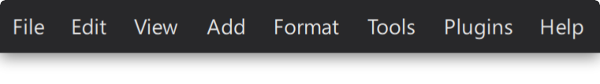
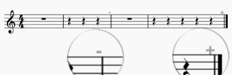

用户界面
概述
MuseScore Studio 的 UI（用户界面）由主应用程序窗口以及所有相关的对话框、面板和菜单组成。
主窗口
在 MuseScore 主窗口的左上方有三个选项卡，分别标记为 主页、乐谱 和 发布。
主页选项卡
主页选项卡包含以下页面：
我的账户
创建新的 MuseScore 账户，或登录到您的现有账户。拥有有效账户后，您可以在 musescore.org 的论坛中获得技术协助并报告错误。您还可以将文件保存到 musescore.com 的云端。
乐谱
此部分允许您新建乐谱或打开现有乐谱。有关创建新乐谱的信息，请参阅设置乐谱。
插件
此窗口显示可用插件的列表。请参阅插件一章，了解如何管理这些有用的附加组件。
学习
这里存放视频教程。单击任何视频教程都会在官方 MuseScore YouTube 频道上打开它。
乐谱选项卡
此区域是您在 MuseScore 中完成大部分工作的地方，包括添加音乐记谱和收听乐谱播放。工作区由多个区域组成（编号与下图对应）：

乐谱选项卡中工具栏和面板的默认布局
- 分谱按钮：位于主窗口顶部中央附近，此按钮打开分谱对话框，您可以在其中创建、编辑和删除乐器分谱。
- 混音器按钮：分谱右侧的按钮用于打开和关闭混音器面板，您可以在其中分别控制每个乐器的声音和音量。
- 播放工具栏：位于右上方，此工具栏使您可以播放、暂停、倒回和循环播放。使用鼠标，您可以拖动六点握持区（⠿）将此工具栏解除停靠，并显示用于定位和控制播放速度的附加选项。
- 音符输入工具栏：横跨程序窗口顶部，位于分谱和混音器按钮正下方，音符输入工具栏包含乐谱书写中使用的基本记谱元素。使用它可以设置音符时值、切换变音记号、应用常用演奏记号、输入连音以及在声部之间切换。
- 左侧边栏：程序窗口左侧的区域包含各种面板，例如面板、属性和乐器。这些面板可以按需显示或隐藏，也可以解除停靠并拖动到右侧边栏——窗口另一侧的等效区域。
- 乐谱视图 / 记谱视图：这是显示当前乐谱或乐器分谱（作为乐谱纸）的主要中央区域。记谱元素在此处添加、编辑和删除。
- 状态栏：沿窗口底部延伸。左侧显示有关乐谱中所选元素的实用信息。右侧包含用于切换工作区、选择实际音高或移调音高视图，以及指定页面显示和缩放系数（放大倍数）的控件。
键盘用户可按 Tab 或 F6 在这些 UI 区域之间导航。在每个区域内，使用方向键和 Tab 进行导航。
几乎所有面板和工具栏都可以根据您的项目需求和工作流偏好解除停靠并重新定位。请在工作区中了解更多信息。
发布选项卡
此选项卡使您可以在没有音符输入工具栏或侧边栏面板干扰的情况下查看乐谱。这里提供打印乐谱的选项，以及将其导出为各种图片、音频和文档格式的选项。当您的乐谱完成后，还可以将其发布到 musescore.com。
菜单栏

在本手册中，您会遇到 菜单 > 项目 形式的说明。例如，文件 > 保存 就是打开文件菜单并在该菜单中选择保存项目的说明。
在 macOS 上，MuseScore 的菜单是位于屏幕顶部的系统级菜单栏的一部分。键盘用户可以按 Ctrl+F2 到达此区域，然后使用方向键或字母键导航（例如按 F 打开文件菜单）。
在 Windows 和 Linux 上，菜单栏位于每个应用程序窗口的顶部。键盘用户可以按 Alt 键到达菜单，可选地再按一个字母或数字键（例如按 Alt+F 打开文件，随后按 A 选择另存为）。相关的字母或数字称为助记访问键；在按住 Alt 时，它在菜单中带有下划线。方向键也可用于在菜单中导航。
MuseScore 的菜单栏包含以下菜单：
文件
文件菜单用于新建文件、打开和保存文件、导入和导出各种格式、创建和编辑乐器分谱以及打印。
编辑
编辑菜单提供撤销和重做选项、复制/剪切/粘贴选项以及查找/转到功能。
视图
视图菜单用于显示或隐藏各种面板、对话框和其他工作区元素。
显示子菜单下的项目调整非打印元素的显示：
- 显示不可见元素：根据元素的属性面板：不可见设置显示/隐藏元素。如果勾选此选项，不可见元素将在乐谱窗口中以浅灰色显示。
- 显示格式：显示/隐藏系统和水平间距：系统分页符或页面和垂直间距：分页符符号。
- 显示框架：显示/隐藏框架的虚线轮廓。
- 显示页边距：显示/隐藏乐谱大小和间距：页边距。
- 显示不规则小节：小节右上角的加号或减号表示其时值与拍号设置的时值不同。

添加
添加菜单用于向乐谱添加不同类型的元素，例如音符、文本、小节等。
格式
格式菜单用于调整乐谱的全局和局部格式。它还可以让您拉伸或收缩乐谱、加载和保存乐谱样式等。
工具
工具菜单提供操作乐谱或其选定区域的命令，包括移调、交换声部、切换斜线记谱等。
插件
插件菜单用于运行插件。插件必须先启用才会出现在此菜单中。使用管理插件选项可启用 MuseScore 的内置插件以及您已安装的任何新插件。
帮助
帮助菜单提供对本手册的访问，以及检查更新或恢复出厂设置的选项。还有一个寻求帮助选项，可转到您可以提问或报告错误的论坛。
在论坛发帖时，说明您使用的 MuseScore Studio 版本很重要。在 Windows 和 Linux 上，可通过 帮助 > 关于 MuseScore Studio 找到；在 macOS 上，可通过 MuseScore Studio > 关于 找到。
上下文菜单
在应用程序的某些部分（主要是在乐谱选项卡中），上下文菜单提供了附加功能，例如复制、编辑、自定义、删除或查看您打开菜单时选中的任何项目的属性。
要打开特定项目的上下文菜单：
- 用鼠标右键单击该项目，或
- 用键盘选中该项目并按 Shift+F10。
- 某些 PC 键盘在右 Alt 键（AltGr）附近还有一个专用的 Menu 或 Copilot 键。在 Windows 11 中，您可能需要快速按下并松开此键，以免激活 Microsoft Copilot。
在乐谱之外，上下文菜单的存在通常由带三个点（⋮）的小按钮或设置齿轮（⛭）指示。按下该按钮即可打开菜单。如果该按钮与附近的项目相关联（例如在面板中），您也可以右键单击该项目或使用 Shift+F10。
谱表/分谱/小节属性
如果您在小节内的空白区域右键单击，出现的上下文菜单包含谱表/分谱属性（用于重命名谱表或替换其乐器）和小节属性（用于更改小节编号或创建不完整小节）的选项。
要通过键盘访问这些选项：
- 在相关谱表或小节中选择一个音符或休止符。
- 按住 Shift 键并按 Left 或 Right 创建范围选择。
- 按 Shift+F10（或者，如果您的键盘有专用的 Menu 键，则按该键）打开菜单。